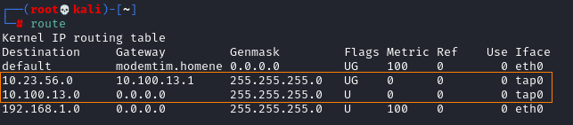
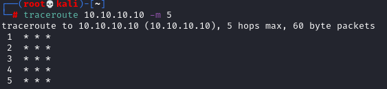

Network Tracing
In this phase we have to determine the network topology and draw a network map
Route
Useful to find the default gateway for a host,
route -n

Traceroute
Useful to understand which path takes the packets to arrive to a host
Does not work if the default gateway is blocking ICMP packets (like below)
traceroute 10.10.10.10 -m 5

Zenmap
https://nmap.org/book/zenmap-topology.html
Installation:
apt install zenmap -yTo run the scan we can select the profile Regular Scan
Now we can go to the tab Topology and we should see the topology graph.
The topology view is most useful when combined with Nmap's --traceroute option, because that's the option that discovers the network path to a host
Command Line:
nmap -O -A 192.168.1.0/24 --traceroute
It take a lot time, another option faster than reaceroute all the network is to traceroute only the Ip Addresses that we know that are alive
nmap [ipAddress1] [ipAddress2] --traceroute

EtherApe
apt install etherape
run
etherape
For other commands see the chapter Post Exploitation: mapping the internal network